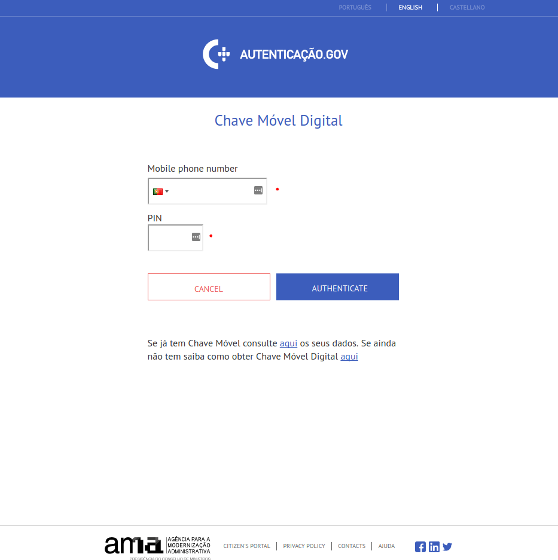
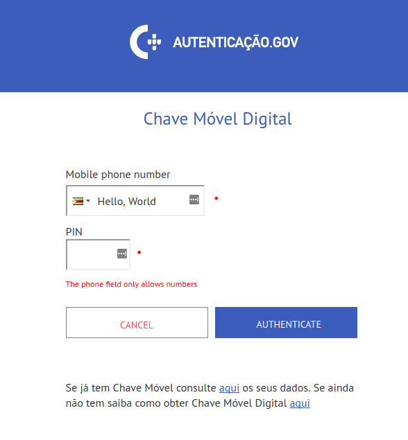
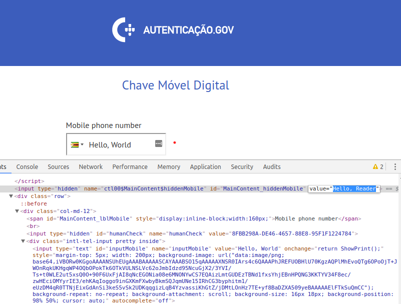

- Part 1 - The Weak Security Of The Portuguese Government’s Authentication System
- Part 2 - Chave Móvel Digital Multiple XSS Vulnerabilites
- Part 3 - Chave Móvel Digital Phone Number Leakage
- Part 4 - Chave Móvel Digital Log Out Not Working
Introduction
In this blog post, I will be exploring the Reflected Cross-Site-Scripting (XSS) vulnerability present in the Portuguese government’s authentication system’s website www.autenticacao.gov.pt.
The XSS vulnerability is present in the Chave Móvel Digital (CMD) login page.
The XSS Vulnerability
At the moment of writing this post, there are 3 ways that you can authenticate yourself:
- the second-factor code is sent to your mobile phone number
- the second-factor code is sent to your e-mail
- the second-factor code is sent to your as a private Twitter message
 |
I’m going to choose the phone number authentication method, since this is the only one that’s required. The other two are not activated by default. The XSS vulnerability seems to only work on the mobile phone number and Twitter authentication methods. E-mail authentication seems to be doing input sanitization correctly. There are two separate places where you can login: the “Personal Area”, which only allows mobile phone number login, and the regular one, which allows the 3 authentication methods described above. The XSS vulnerability works in both places.
This is how the main login page looks like:
|  |
To login to the portal, you need to enter your mobile phone number and a
numeric PIN. The Mobile phone number field is the one that will be used
to exploit the XSS vulnerability. Throughout this section I will be using
1234 as the PIN number.
Now let’s see what happens when I try to enter a phone number that consists
only of letters (Hello, World"):
 |
And now let’s click on “Authenticate”:
|  |
Even though the page says The phone field only allows numbers, at the bottom, it
still copies the input that I provided verbatim to the same field.
At this point I was pretty sure that the page is vulnerable to XSS.
So I looked at the source code to see how it can be exploited:
 |
Okay, so the input is you provided initially is copied to the value
attribute of the inputMobile element. So let’s try to show a very simple
XSS that would inject a new span element into the page and would comment
out some of the HTML. For this, in the Mobile phone number field, we’ll
input the following text: " <span> Hello, World </span> <!--.
 |
And here is the result:
 |
As you can see, our custom HTMLwas successfully injected into the page.
The rest of the page wasn’t commented out only because there is another
closing HTML comment tag (-->) present in the page’s source.
 |
Below is a video demonstration of how this vulnerability can be exploited to inject arbitrary JavaScript code into the page.
Whenever the text in the “Mobile phone number” field is
changed, the ShowPrint() function is called. The only thing that it does is
copies the value from the inputMobile element to the MainContent_hiddenMobile attribute:
function ShowPrint() {
var mobileValue = document.getElementById("inputMobile").value;
document.getElementById("MainContent_hiddenMobile").value = mobileValue;
return true;
}Why this is done is not obvious, since both of the fields get POSTed to the
the backend when you click on “Authenticate”:
 |
However, if we manually change the value of the MainContent_hiddenMobile
field to Hello, Reader and leave Hello, World in the inputMobile
field, we can see that the value that that’s placed in the “Mobile phone number” box in the failed login page is the one from MainContent_hiddenMobile.
|  |
 |
Conclusion
In this blog post I showed you the POST XSS vulnerability present
in the Portuguese government’s autenticacao.gov.pt Chave Móvel Digital
login page.
In the next blog post I will show you how you can find out if a mobile phone number is registered with Chave Móvel Digital or not, making the existing ambiguous “Either the mobile number or the PIN are incorrect” message useless and opening the door for various social engineering attacks.